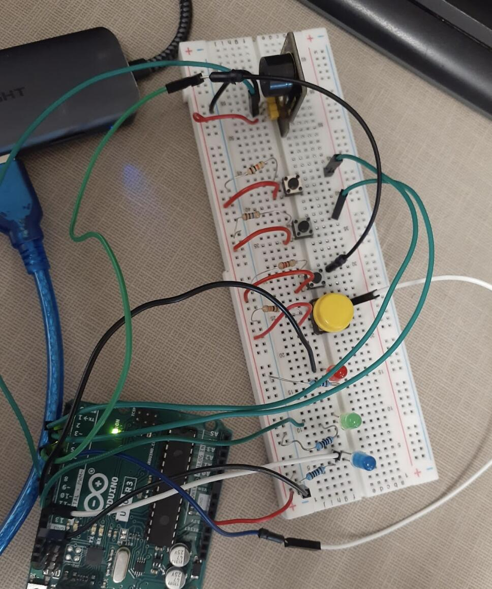
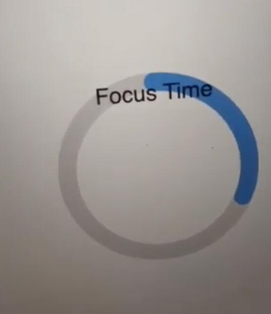

Things I built because I wanted to
Assembled board
Designed and routed a custom keyboard PCB in KiCad, working through trace layout, signal integrity and component placement.
Wrote the embedded firmware behind it: real-time matrix scanning, debouncing logic and I/O mapping, so the board reports every keypress cleanly.


A hardware–software system: Arduino sensor readings stream over serial into a p5.js interface that renders them live in the browser.
Integrated PoseNet through ml5.js so detected yoga poses act as mindfulness triggers.
A tower-defense game controlled by hand gestures rather than a keyboard. ml5.js reads
hand landmarks from the webcam, and those positions drive the game input while p5.js
renders the canvas, the targets and the score.
The hard part was making camera input feel usable inside a game loop — tracking has to
stay stable while your hands move, and the game still has to keep a playable frame rate.
This portfolio is a single-page application built with vanilla HTML, CSS and JavaScript. It uses the Intersection Observer API to trigger animations as you scroll, and a custom audio player to play background music. This portfolio was designed and built from scratch by me. The full source code is available on GitHub :D